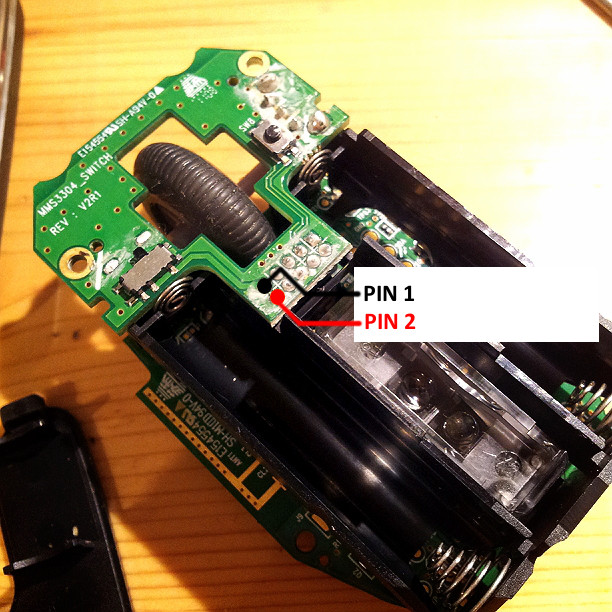
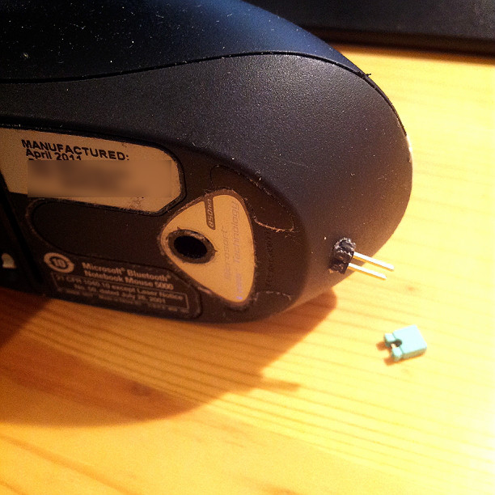

I happen to be a big fan of Microsoft mouses, I use them exclusively. Nice, efficient, match my hand, nice touch ... love them. I am the (nearly perfectly) happy owner of a
Microsoft Bluetooth Notebook 5000 Mouse and it works perfectly except that damn power button at the bottom that after one year started to give way. Sometimes need to switch it on and off 4-5 times before it decides to turn the beast off instead of a reboot. Shall I buy a new one ? No no no, not me ...
How to open it ?
I happened to find a very nice photo tutorial here so use the pictures
http://www.flickr.com/photos/mattlichter/sets/72157613140207580/
The fix
Idea : add my own easy to reach and foolproof switch. A easy cheap solution : a jumper switch.
Modus operandi : open the mouse, solder 2 wires PIN 1 and PIN 2, drive them to the back of the mouse, drive a hole, put a jumper and a bit of glue et voila (^_^)
Result : 1 hour of work and the price of a new 60 USD mouse saved.

The 2 pins you want to short to close the circuit and turn the mouse on or off

The jumper at the back of the mouse